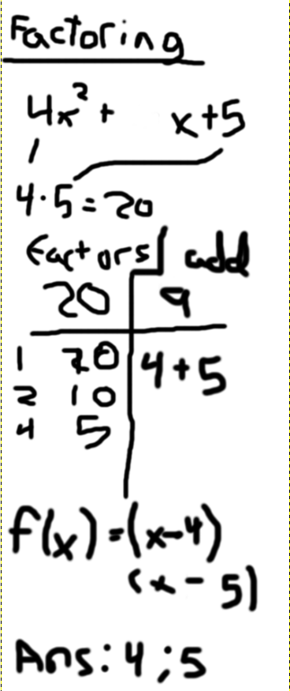
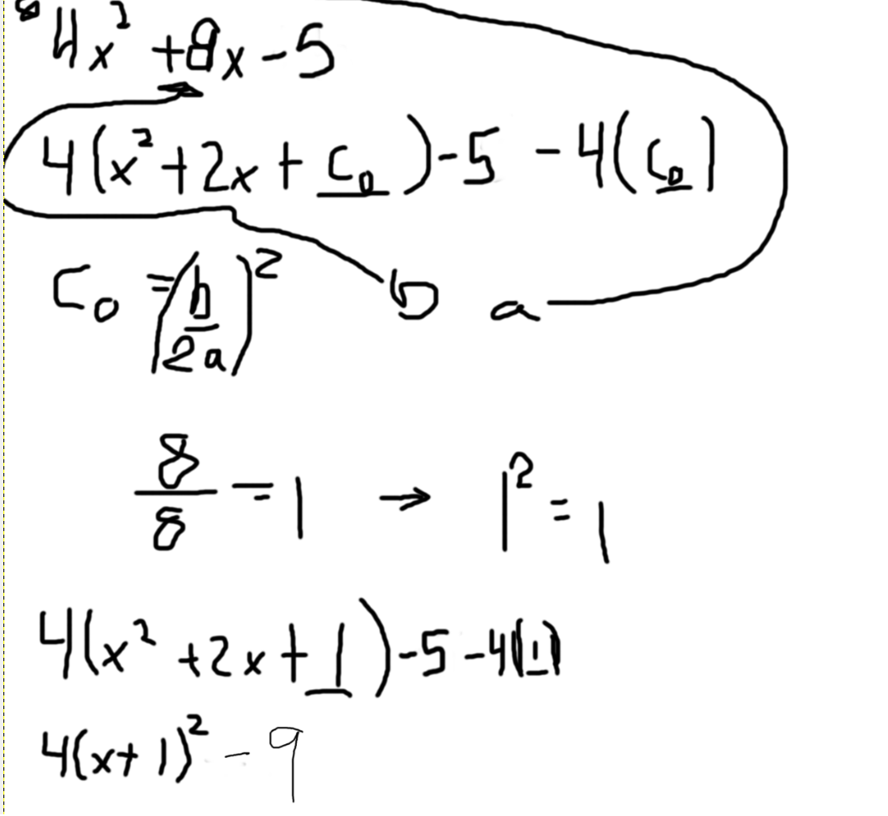
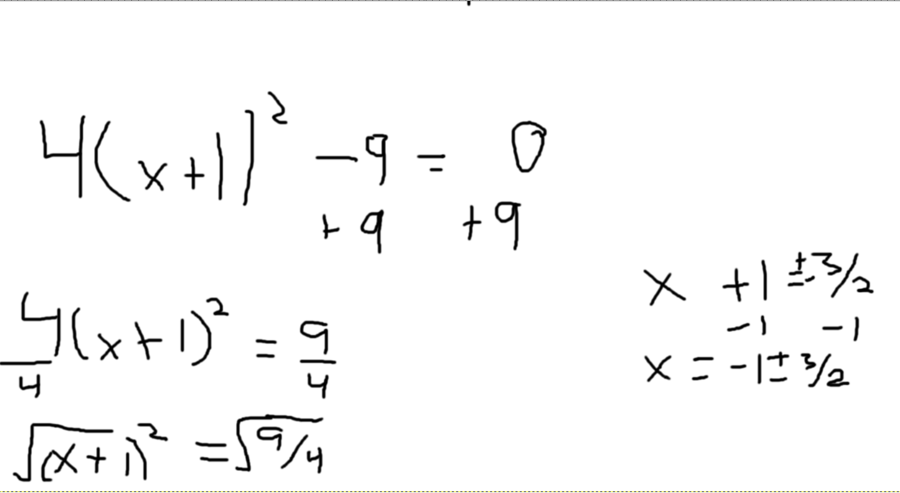
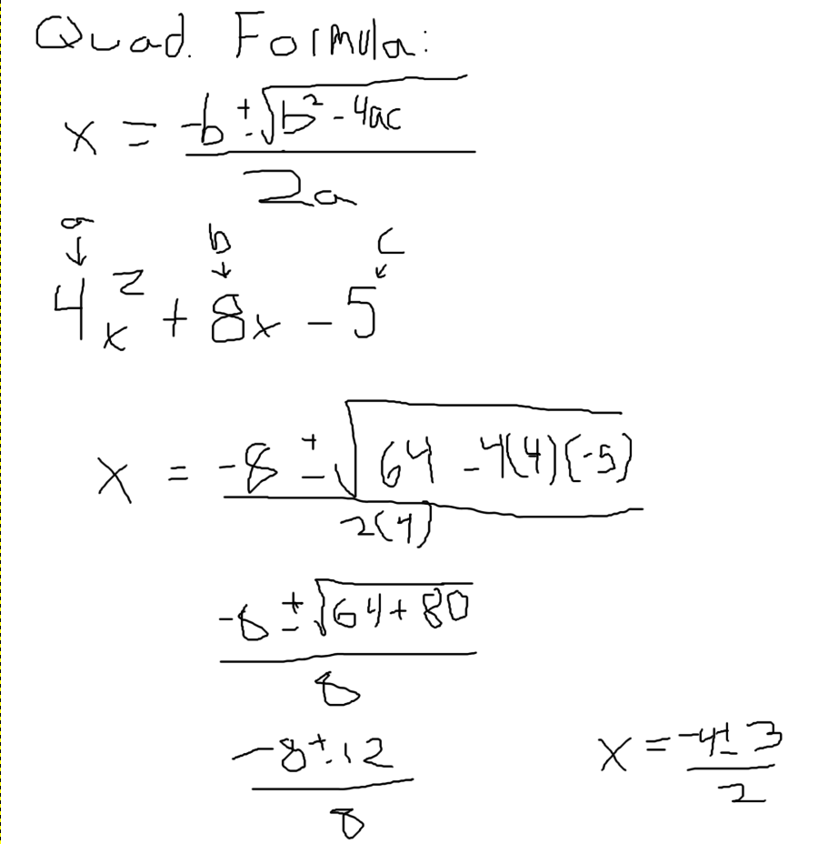

This is a short tutorial on how to solve quadratics, based on the failure you had on the Factoring Quadratics Quiz. Hit the left arrow on the top left side of your browser to return to the quiz.
FactoringThe first way to solve a quadratic is by factoring. To do this, you have to take terms a and c, and multiply them. You have to find which two factors of term ac add up to b, as shown to the right. Then, you plug them in to the equation (x-f1)(x-f2). f1 and f2 are your answers. |
 |
Completing the SquareThis method is a little bit trickier, and usually not the best to go to. To do this, first you have to turn the equation in to vertex form as shown to the right. Then, you use reverse order of operations after setting the equation equal to zero. That will give you 2 terms; your answers. |

 |
Quadratic FormulaThis form is a little bit tricky at first but nearly always works well. You plug in the parts of standard form to the quadratic formula, as shown to the right, and you solve complete the different operations |
 |